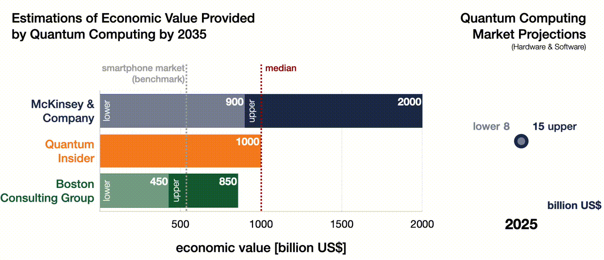

Strictly Confidential: Not for Distribution or Sharing
The Quantum Computing Revolution:
From Technological Opportunity to Geopolitical Power Shift (Part 2)
Quantum computing might sound like just another geeky buzzword — but in reality, it could be the most consequential technological breakthrough of all time. Even before becoming fully operational, its mere potential is already reshaping geopolitics, influencing economic strategy, and intensifying global rivalries. This article connects how this technological quantum leap is driving power shifts, deepening conflicts, and redrawing the map of the 21st century.
Introduction
We are living in an era of technological advancements hitherto unseen: artificial intelligence (AI) is installed on almost every smartphone, our data floats in a gigantic virtual cloud, financial assets are stored in novel, digital currencies and the list goes on and on.
Recently, significant breakthroughs have been made with a technology that will be an absolute game changer – quantum computing!
The first running quantum computer will mark* an inflection point as we will enter the era of quantum supremacy; an era in which we can calculate problems that were previously beyond reach — just as the invention of the telescope allowed us to observe galaxies we didn’t even know existed, or the microscope revealed entire worlds within a drop of water. Used wisely, this technology will help us solve humanity's most pressing problems - as I argued in Part 1 of this article. However, there is a potentially dark side to these developments, as the power of the technology will upset global economic, political, military and social balances. The unfathomable computational strength of QCs will shift geopolitical power towards entities (yes, entities not necessarily nation states!) with access to QCs. This will create risks that may be impossible to control as we’ll learn later in this think piece.
“We are at an inflection point entering an era of technological supremacy, where entities that lead in innovation and have access to the most advanced technologies will set the rules for the future.”
Almost all new tech can be used beneficially or maliciously, think of nuclear technology and the scientist of the Manhattan project: They debated the implications of the technology they were building long before it was operational. For QC the same level of proactive ethical foresight is needed – and it is needed right now!
The second part of this article will examine these emerging risks, explore their geopolitical, social and economic implications and assess how this not-yet-operational technology is already affecting international affairs. Last but not least, we’ll explore what safeguards, if any, we can still put in place to mitigate risks.
Quantum Computing: Power, Peril, and the Coming Symbiosis with AI
Quantum computing won’t just be a technological upgrade — it will mark a decisive point: A new era will begin the moment the first operational QC becomes a reality. It will offer computational power beyond anything we can currently comprehend. What we do with that power could shape the fate of our planet – for better or for worse.
QCs could become humanity’s ultimate problem-solving engine. They promise breakthroughs in climate modelling, energy system optimisation, and disease prevention — enabling us to unravel some of the most stubborn and complex challenges we face today. Part 1 of this article addressed this in detail.
But there’s a darker side to that power. It stems largely from two extraordinary capabilities of QCs: quantum decryption and quantum simulation. Each unlocks of these unprecedented potential — and peril — across multiple domains:
Quantum Decryption: A quantum computer can crack today’s encryption with ease, rendering our current cryptographic safeguards obsolete. This threatens every sector that relies on secure data — banking, healthcare, communications, and national security. In practical terms, a sufficiently advanced QC could decrypt financial networks or manipulate transactions at will. That’s not just a technical failure — it’s a recipe for financial panic, collapse of trust, and social upheaval.
Quantum Simulations: QCs will be able to model highly complex, multidimensional systems that classical computers simply can’t handle. That’s a good thing — until it’s not. Quantum simulations could rapidly accelerate discoveries in sensitive fields like biotechnology or nanotech, pushing breakthroughs faster than society can regulate or absorb. Some experts believe these advances could become existential threats — for instance, by enabling the design of autonomous weapons or engineered pathogens before any oversight is possible.
Whoever reaches quantum supremacy first will likely reach quantum dominance soon after. That actor — whether a state or non-state entity — will gain a decisive advantage across science, defence, finance, and global governance. Quantum supremacy might just determine the next global hegemon. An excellent example of such a technological advantage is what happened on the Ukrainian battlefield: Ukrainian forces were able to stop the advance of an attacker who outnumbered them by using intelligence - both open source and foreign - in combination with AI; this combination allowed them to strike the right point at the right time and leave the attackers bewildered. Add the power of a quantum computer to such an approach and the results will be unfathomable; the race for this advantage is on!
Google’s recent Willow breakthrough — reducing computation times from 10 septillion years to minutes — has supercharged this global race. Microsoft quickly followed with claims of a new quantum state of matter. At the time of writing (March 2025), Quantinuum reported a breakthrough regarding a hitherto unsolvable mathematical problem and D-Wave even claimed quantum supremacy! One thing is clear: the pace of discovery is accelerating. his isn’t a coincidence, AI is now playing a major role in supporting quantum development.
The animation below illustrates this emerging symbiosis between quantum computing and artificial intelligence — and what it means for the speed of progress ahead.
As shown in the infographic, AI is already supporting QC by assisting its operation and design. Ultimately, this won’t remain a one-way street: once QCs are fully operational, they will accelerate AI development in return, while providing it with unprecedented computational power. A symbiosis that will lead to an ever-accelerating innovation cycle — one increasingly difficult for humans to govern.
As we approach this threshold, we must be clear-eyed: quantum computing will usher in extraordinary opportunity — but also serious, immediate, and interlinked risks. It’s time we looked at those risks in more detail.
Quantum Computing’s Severe Risks: Systemic and Interdependent
The sci-fi technology not only comes with the outlined severe risks for both our shared socio-economic system and our very existence, but also with systemic impact. The risks however, are not posed by the computer itself but by the controlling entity and cascades of events that could be triggered if the power of QCs is not used responsibly. The visual risk matrix illustrates that a plethora of events could be initiated that could lead to adverse outcomes; these example risks are not exhaustive – they highlight how quantum technology, if misused or unleashed without safeguards, could upend society or even jeopardise our existence. In the risk matrix, hover over the outer layer depicting the potential result of QC misuse to see which QC capability - simulations or decryption – is the cause (1), which domain is impacted (2) and the result (3) including links for further reading; the buttons in the top left-hand corner allow you to explore socio-economic and existential risks separately.
Notably, these threats are often synergetic, meaning they can amplify one another. The risk matrix’s scenarios don’t occur in isolation – they interact and cascade. For instance, a quantum-enabled attack that decrypts and collapses the financial system would inevitably trigger broader economic crisis, which potentially leads to social upheaval. Such a scenario is subsequently likely to cause a political crisis, which would affect the workings of society itself. Likewise, rapid quantum-driven advances in AI or biotechnology could emerge just as institutions are weakened by economic chaos, making the overall fallout even harder to contain. In combination, one risk can feed into another, creating a vicious cycle of compounding crises. In short, not only do QCs pose serious risks, but the mechanisms behind the risks are interdependent and could - through cascade effects - create runaway scenarios that we may not be able to control!
These risks are not theoretical — they are driving geopolitical action in real time. The race to develop the first operable quantum computer is already fuelling a full-blown global technology war, most visibly between the U.S. and China. Quantum supremacy promises dominance not just in computation, but in finance, defence, and data — the pillars of modern power. This has led to geopolitical tensions and an escalating cycle of techno-strategic rivalry. The symbiosis between quantum computing and AI has only raised the stakes further — the two technologies amplify one another, raising both opportunity and risk. Owing to these high stakes, quantum computing has become the epicentre of a modern Cold War – a full-blown tech race between China and the United States. It’s no longer about catching up; it’s about who can leap ahead fastest.
Technology & Geopolitics: The Quantum Arms Race
Quantum computing is clearly a frontier technology: Building a functional QC requires some of the most fine-tuned physical conditions known to science: near absolute-zero temperatures, ultra-high vacuum environments, and near-perfect isolation…… and that’s just the hardware. Equally critical are advanced semiconductors and control systems, prerequisites for the sophisticated AI that enables the quantum chip to operate, i.e. to remain in coherence. The quantum chip requires strategic chemical elements – more on this later – and – rather unsurprisingly — serious financial assets. Due to the high stakes around QCs, governments are investing heavily in it: The heatmap below shows how nations, unions and federations around the world are stepping up, funnelling billions into the race for quantum supremacy. Some rely mainly on their private sector as well as public-private partnerships (PPPs), like the United States; some mainly on centralised investments, as for instance China or use a multi-faceted approach of like European countries that utilise national and EU-wide investment, research programmes, start-up support as well as PPPs (in the Heatmap, click EU to see national investments). When it comes to the main direct competitors, the US has the advantage of larger private sector investments and a decentralised, highly-collaborative environment of corporates, research institutions and leading universities. In my opinion, this is formidable advantage to China’s top-down approach.
The race for quantum computing is the modern-day analogue to the nuclear arms race of the 20th century — only this time, the battleground is shifting from raw military power and control over land & resources to technological supremacy. Markus Pflitsch, CEO of Terra Quantum and advisor to President Trump, has aptly dubbed this new arena “techno-politics”. Yet as we’ll see next, control over critical resources remains a decisive factor in this escalating contest.
The battle, however, is not exclusively fought with proactive measure to support QC progress, there is a flip side: next to supporting the development of the technology, players are looking for means to prohibit others from achieving quantum supremacy first. Interestingly, these efforts are key factors in ongoing conflicts and geopolitical tensions that we follow through the media without realising that they are linked to technological endeavours. Don’t despair, I’ll tie it all together later in this article.
Breaking the Cycle: Chips on the Global Table
While a plethora of high-tech equipment is necessary to run a QC, the real strategic Achilles heal in this race is the supply of advanced semiconductors. Quantum computers depend on sophisticated control systems, which in turn require the most advanced semiconductors; the infographic on the QC-AI symbiosis in the preceding section (link) illustrated this.
These semiconductors are produced mainly in countries affiliated with the West, and the West’s plan is to achieve quantum supremacy first not only by pushing the technology, but also by prohibiting China access to the mentioned chips. Ultimately, it’s precisely the symbiosis between AI and QC, the virtuous circle shown in the preceding section, that rival nations are trying to disrupt; see the animation below.
To prevent China from gaining the upper hand, the US has imposed sweeping trade restrictions, targeting not just Chinese companies but the global semiconductor supply chain. These sanctions aim to slow China’s access to high-end chips – and by extension, to the advanced quantum and AI systems that depend on them. Initial sanction have been implemented during the first Trump presidency and were tightened several times since. The animation below shows semiconductor exports – from basic to advanced –from the US to China, and illustrates that only the most recent restriction have had an impact, as earlier versions could be circumvented. Meanwhile, other countries have joined the allegiance to control access to state-of-the-art chips; Japan, Taiwan, the Netherlands and many other countries have joined this allegiance.
The sanctions, however, had a fair few unintended consequences such as spurring China’s domestic endeavours for advanced chip manufacturing, the hoarding of chips and equipment or the establishment of back-channel supply chains. In addition, the restrictions are obviously hampering innovation by disrupting the global innovation eco-system; since countries that are not clearly affiliated with the West are included in export restrictions, innovations from their end are hampered leading to a slowdown of development. The most important & detrimental knock-on effect, however, is the resurgence of an old conflict in East Asia: China’s territorial ambitions regarding Taiwan!
The Strait of Taiwan has become a geopolitical flashpoint again: Taiwan’s semiconductor foundries (especially TSMC) are among the few capable of producing the chips needed to control next-gen QCs. In strategic terms, this makes Taiwan not just a territorial prize, but a technological one — protected, for now, by what’s often referred to as the Silicon Shield. Should China lay its hands on the Island nation, the West – led by the United States – would clearly intervene, hence Taiwan’s capabilities in silicon chip manufacturing are attraction and deterrent at the same time, providing Taiwan with its Silicon Shield.
The recent happenings in the Strait of Taiwan clearly show that both sides are flexing muscles. China is continuing military drills, most recently resembling a blockade of the Island, while Western countries are sending naval forces to indicate their likely response. From this it can be seen that the stakes in this race are very, very high. Intelligence services are also on the case: Taiwan’s counterintelligence was able to catch 4 soldiers working in the presidential office who were spying for China and is tracking a large scale attempt to recruit Taiwanese tech personnel for Chinese endeavours.
Twitter Embed Test
Still, China has its assets as well: it controls another vital ingredient for high tech, and it didn't take long for China to use it in retaliation. Let's take a closer look at this below.
China’s Tit-forTat: Critical Mineral Resources
High-tech is a lot about know-how, but not exclusively; some chemical elements are irreplaceable in the manufacturing of advanced systems such as platinum for catalysis or neodymium for state-of-the-art magnets. A group of chemical elements referred to as rare earth metals (REMs) are critical for a range of important tech developments including electric engines, LED lights, fibre-optic cables and state-of-the-art magnets.
In defense, REMs are used in satellite communications, guidance systems, and aircraft structures. The U.S. Department of Defense has highlighted the importance of securing a stable supply of these materials, noting their use in critical defence capabilities such as the F-35 Lightning II aircraft and advanced radar systems.
In addition to these important applications, REMs are critical for – you guessed it – quantum chips.
Currently, the main producer of these elements is China and it did not wait long to use its control over this resource to retaliate the US’ export bans with an analogue for REMs. In December 2023, China banned the export of technology related to rare earth magnet production, adding to existing restrictions on extraction and separation technologies. These measures underscore China’s intent to maintain its dominance in the rare earth sector, as it accounts for nearly 90% of global refined output. This strategic move underscores the pivotal role REMs play not only in quantum computing but also across a spectrum of high-tech applications, including defence systems.
China’s export controls on REMs have prompted other nations to seek alternative sources and reduce reliance on Chinese supplies. For example, the European Union has announced strategic projects to increase production of critical materials within member countries as part of ERMA, the European Raw Materials Alliance. Equally, the United States are exploring domestic resources, such as the Round Top Mountain in Texas, which hosts significant deposits of heavy rare-earth elements.
The geopolitical manoeuvring surrounding REMs highlights their strategic importance in the global technology landscape. As nations vie for technological supremacy, control over these critical materials has become a focal point, influencing trade policies, international relations and most importantly conflicts. The key here is the geographical distribution of REMs and how this distribution overlaps with political allegiances, the infographic below explains this, please click yourself through it.
From the above infographic you can see that REMs are concentrated in a few countries and the lion’s share of REMs are in countries with a BRICS affiliation! Hence, the West’s access is limited and the global contest for REMs has intensified through the advent of quantum computing, with geopolitical tensions influencing strategic manoeuvres. From the infographic, you clearly recognised two countries that have been in the media quite a lot lately: Ukraine and Greenland. To understand how REMs are reshaping alliances, let’s examine these two geopolitical flashpoint.
In the midst of the Ukraine conflict, President Donald Trump, shortly after taking office, demanded compensation from Ukraine for the extensive military aid the US had provided to the attacked country. "Surprisingly", this compensation was to be paid in the form of an agreement on critical minerals, including - you guessed it again - rare earth metals.The Ukrainian President Volodymyr Zelensky is willing to agree on such an arrangement but insists on tying it to security guarantees for his country, while his US counterpart is reluctant and is pressuring Ukraine. We’re not in checkmate, but definitely in check. President Selensky has - in my opinion quite rightly – turned Trump’s deal down as it did not come with security guarantees; he owes it to the Ukrainian people to make the most of the countries resources and use them as a shield analogue to Taiwan’s silicon shield. An indirect safeguard for Ukraine, however, would be American “boots on the ground” in form of US mining giants exploring resources in Ukraine – I bet Russia would think twice or trice about bombing Ukraine if this would interfere with US business operations regarding strategic resources.
The tricky part, Ukraine’s REM deposits are mainly located in areas currently held by Russia and the American president has initiated parallel talks with the Kremlin regarding resource production. Mr Trump is driving a hard bargain here, well realising that he is playing with European security.
Concurrently, Trump has renewed his interest in acquiring Greenland, citing its vast reserves of rare earth elements and it strategic location for entrance into the Atlantic ocean as vital for U.S. national security. These developments underscore the escalating global scramble for REMs, driven by their indispensable role in high-tech industries and defence applications. Nota bene: these conflicts and tensions are not predominantly about REMs, but the scramble for these critical resources and technological supremacy is a key factor fuelling them!
Moreover, the above explained examples show that - behind Trump's bold and populist rhetoric - there are strategic goals aimed at cementing the US's position as a technological and military leader, as well as re-establishing the US as a global economic powerhouse. The economy is another factor driving interest in QC; in the following sections, we'll explore what experts think about the potential for positive economic impact that QC can provide.
The Economic Promise of Quantum Computing
Still, the hype around QCs isn’t just geopolitical, the economics of the tech look pretty nice too. According to leading consultancies and market analysts, quantum computing could generate between $450 billion and $2 trillion in economic value by 2035. That’s not just a futuristic vision — it’s a near-term transformation!
As visualised in the infographic below, estimates vary widely depending on how quickly the technology matures and how broadly it’s adopted. The Boston Consulting Group provides a conservative range of $450–850 billion, while Quantum Insider and McKinsey & Company both project potential impacts approaching or exceeding $1 trillion. That’s a market larger than the entire global smartphone ecosystem today.
But these forecasts don’t only reflect the growth of hardware and software sales — they account for value creation across sectors: pharma, logistics, finance, energy, materials science, and beyond. Quantum computing won’t just launch a new tech vertical — it will upgrade existing ones.
In the short term, the market for quantum hardware and software alone is expected to hit $8–15 billion by 2025, underscoring the urgency with which industry leaders are building quantum capacity. As the timeline narrows, the stakes rise — not just for businesses and investors, but for entire economies competing to capture the lion’s share of this transformative value.

The economic impact of quantum computing will also depend on how the technology – and its symbiosis with AI – will be managed by government. From the risk assessment, it can be clearly seen that we cannot let this technologies “go loose” as there are too many risks involved. Legislators will have to face the difficult balancing act of supporting this innovation while safeguarding the public interest, an important point that we’ll explore together hereafter.
Precautions & Safeguards: Can We Stay Ahead of the Curve?
While the quantum arms race accelerates, so too do efforts to mitigate its most dangerous consequences. Governments, research institutions, and industry coalitions are scrambling to future-proof digital systems and strategic infrastructure before quantum capabilities render them obsolete — or dangerously vulnerable. Below are key pillars of this evolving security architecture.
Post-Quantum Cryptography (PQC): The most urgent safeguard is building encryption that quantum computers can’t break. Known as post-quantum cryptography, or PQC, this new class of encryption algorithms is designed to withstand attacks from quantum decryption. The U.S. National Institute of Standards and Technology (NIST) has finalized its first set of PQC standards and published a roadmap for retiring RSA and ECC encryption by 2035 — a shift already echoed by France’s phased transition strategy targeting full PQC compliance by 2030. Several countries, including Germany, Canada, and Japan, are running parallel efforts to ensure their critical infrastructure and digital assets can survive in a post-quantum world.
Quantum Security Guidelines & Crypto-Agility: The ability to adapt encryption systems swiftly — known as crypto-agility — is becoming a regulatory priority. Singapore’s Cyber Security Agency (CSA) will roll out national guidelines in 2025 to guide institutions through risk-based assessments, focusing on data value and migration timelines. Meanwhile, frameworks like the EU’s Digital Operational Resilience Act (DORA) already require state-of-the-art encryption, nudging institutions toward hybrid cryptographic models that blend classical and quantum-safe algorithms.
National Security Initiatives: Quantum tech is now a tier-one national security issue. Intelligence agencies and military planners are actively assessing how future QCs could compromise classified communications, weapons systems, and power grids. As a result, national initiatives are being funded at scale to:
- Harden communications infrastructure with quantum-resistant protocols.
- Map vulnerabilities in critical infrastructure under quantum threat models.
- Develop counterintelligence strategies to deter hostile use of quantum capabilities.
Quantum Key Distribution (QKD): Alongside PQC, Quantum Key Distribution (QKD) is gaining traction as a complementary technology. By using principles of quantum mechanics, QKD allows two parties to establish encryption keys that are theoretically tamper-proof. Organisations are beginning phased QKD deployment — starting with highly sensitive communication networks before expanding to wider IT ecosystems.
Strategic Workforce Development & Supply Chain Resilience: The OECD has flagged two immediate bottlenecks to secure quantum adoption: people and materials. Nations are boosting investment in STEM education, research fellowships, and vocational training to fill the global shortage of quantum-literate engineers and scientists. Meanwhile, policymakers are monitoring dependencies on critical resources like rare earth elements and cryogenic materials to safeguard the quantum hardware supply chain.
Financial Sector Safeguards: Quantum decryption would hit finance first — and hardest. Recognising this, the G7 Cyber Expert Group has issued quantum-readiness guidelines to financial institutions, recommending tailored risk assessments and resilience strategies built around quantum-safe standards. Central banks are now including quantum threats in scenario analyses for systemic risk planning.
Digital Diplomacy & Strategic Alliances: Quantum security isn’t just a technical challenge — it’s a diplomatic one. Nations are beginning to formalise “digital diplomacy” frameworks: cross-border agreements on tech standards, export controls, and joint research initiatives. The EU, U.S., and Japan are leading the charge in forming such alliances, often tied to existing cybersecurity pacts or 6G research partnerships. The Quad Alliance (U.S., India, Australia, Japan) has also discussed quantum as a critical area of cooperation. These initiatives aim not only to set shared guardrails, but also to prevent misuse of dual-use technologies and ensure equitable access.
Transition Timelines & Compliance Frameworks: Migration to quantum-safe systems will not happen overnight. Most roadmaps, such as those from NIST and ANSSI (France’s cybersecurity agency), stretch into the 2030s. As critical sectors — finance, telecom, healthcare, automotive — prepare to overhaul their security stacks, governments are establishing transition frameworks to support coordinated compliance and avoid market fragmentation.
Despite encouraging momentum, several hurdles remain:
- The cost of implementing quantum-safe infrastructure could be prohibitive for SMEs.
- The current concentration of quantum talent and infrastructure in a few wealthy nations risks exacerbating global inequalities.
- Vulnerabilities in rare-earth supply chains could delay hardware deployment, especially in lower-income or geopolitically isolated regions.
As the technology curve steepens, regulators will have to walk a tightrope — balancing innovation and competitiveness on the one hand, with national security, individual rights, and global equity on the other. The stakes couldn’t be higher: securing the digital world before QCs arrive will be one of the most consequential policy challenges of our time.
A Geopolitical Wake-Up Call!
Beyond the scramble for tech supremacy, recent developments should serve as a broader wake-up call. The days of near-automatic security guarantees from the United States are waning. US President Trump’s quid-pro-quo stance on military aid has made clear that NATO countries must fulfil their commitments, including the long-standing obligation to spend at least 2% of GDP on defence. In Brussels, there is a long-overdue rethink: energy and defence security are climbing back to the top of the agenda. Europe must now take responsibility — not only to defend its nations and Union, but also to preserve peace and order on its own continent. In my view, this can only be achieved through deterrence. Si vis pacem, para bellum.
But this imperative extends far beyond European borders. The international order itself is becoming increasingly unstable. Should Ukraine fall, it would set a precedent that encourages aggression elsewhere. Taiwan, already under pressure, could become the next flashpoint. In a world where technological supremacy determines economic and strategic power, the loss of Taiwan would not just be territorial — it would mark a tectonic shift in tech capabilities and hence in global influence. As shown in this article, the race for quantum computing and AI will determine who sets the rules in defence, trade, communication, and governance. That is why upholding the sovereignty of nations like Ukraine is not just a moral duty — it is a geopolitical necessity.
The international community has to make it clear - once and for all – that borders agreed under international law have to be respected no matter what!
Moreover, we must recognise that the world has become more fragile over the past years — politically, economically, and environmentally. Technology now acts as both an accelerator and a disruptor. Rapid advances in AI, quantum computing, and biotech can provide power almost overnight. As such, the global balance of power is becoming more fluid than ever. But when power shifts continuously and unpredictably, it becomes harder to establish new equilibriums — and easier for chaos to emerge. That chaos is not abstract: history teaches us that social instability and economic asymmetries often lead to conflict. The roaring 1920s brought enormous economic and technological progress to Europe — but also amplified social inequalities and thus set the stage for the (geo-)political breakdown that followed. We would do well to remember that.
In short, in a world where technology shifts faster than diplomacy or governance, the burden of maintaining peace will fall increasingly on the shoulders of responsible nations. We must be ready to carry it.
Conclusions
Quantum computing is not just another tech wave — it’s the tide that may redraw the contours of global power itself.
The actor — be it a state, a corporation, or a coalition — that first builds a scalable, operational quantum computer won’t just achieve a leap in processing power; it will gain the strategic upper hand across finance, defence, science, and governance. Technological edge will translate directly into geopolitical dominance.
That’s why the race for quantum supremacy is being fought on multiple fronts — from chip embargoes to rare earth mineral deals, from research alliances to export controls and from using military power to intelligence interventions. It also explains why former President Trump has placed quantum computing at the top of his strategic agenda: not just through bold statements and high-level appointments, but by redrawing international alliances around critical technology assets.
But this goes far beyond any one leader or administration. We are witnessing the emergence of a new global order — one no longer defined by borders, oil fields or military bases, but by who controls the next era of computation.
The question is no longer if quantum computing will arrive. It’s when — and more crucially, on whose terms. Will we harness this power to solve our shared global challenges? Or will we allow it to deepen divisions and fuel a new era of techno-political instability?
The inflection point is approaching. The consequences will be profound. But the direction it takes is still — for now — in our hands.
References
- This term was coined by John Preskill and popularised by Michiko Kaku but dates back to the proposal of quantum computing by Yuri Manin and Richard Feynman.
- I am deliberately using the simple future in this article as I deem it a question of time for QCs entering the tech landscape.
- Spanish Ministry of Defense report on AI and the Ukraine war (2024)
- The Financial Times, “D-Wave claims to have reached ‘quantum supremacy’ after costly 25-year pursuit” March 2025; The Street, “Quantum computing leader reveals historic breakthrough" March 2025
- The Economist, “Chinese AI is catching up, posing a dilemma for Donald Trump”, January 2025; Foreign Policy, “What DeepSeek Revealed About the Future of U.S.-China Competition”, January 2024 ; Foreign Affairs "How America’s War on Chinese Tech Backfired”, November 2024
- CSIS, "Understanding U.S. Allies’ Current Legal Authority to Implement AI and Semiconductor Export Controls", March 2025
- Adrain Monck in Arab News, “The Gulf’s advantage in the next AI chapter”, January 2025
- Reuters: SMIC allegedly luring Taiwan tech workers
- The Guardian: Taiwan jails four for spying
- U.S. Department of Defense, “DOD Looks to Establish ‘Mine-to-Magnet’ Supply Chain for Rare Earth Materials”, March 2024
- Reuters, “China Bans Export of Critical Minerals to US as Trade Tensions Escalate”, December 2024
- China's curbs on exports of strategic minerals, February 2025 — Reuters article
- Center for Strategic and International Studies, “China Imposes Its Most Stringent Critical Minerals Export Restrictions Yet Amidst U.S. Trade Tensions”, December 2023
- EU Strategic Materials Site
- Round Top Mountain rare earths project (Texas)